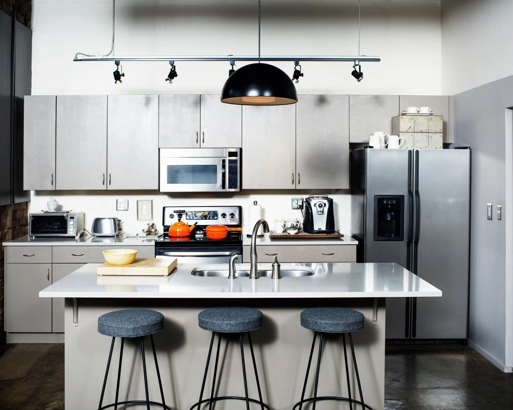

Step 1
Share home details
Tell us your home size, timeline, and service goals through the quote form or by phone.

Three simple steps from quote to clean home.
Step 1
Tell us your home size, timeline, and service goals through the quote form or by phone.
Step 2
We match your home to the right starting service and schedule based on your needs.
Step 3
Your home is cleaned to plan, and you can adjust service as your routine changes.
Start with the service that fits your home now, then shift as needed through the year.
Best for: predictable weekly or biweekly upkeep.
Keep kitchens, bathrooms, and high-use living areas consistently manageable.
Best for: stronger resets after busy stretches.
Detailed cleaning for homes that need more than routine upkeep.
Best for: lease transitions and handoffs.
Get your home ready for a smooth move with less last-minute stress.
Local clients keep booking because service is consistent, communication is clear, and scheduling stays flexible.
Office hours are 8am - 5pm, Monday - Friday. We serve Dallas neighborhoods including The Village, East Dallas, Deep Ellum, Downtown Dallas, Uptown Dallas, Oak Lawn, Lakewood, Lake Highlands, North Dallas, Oak Cliff, University Park, Plano, Richardson, and Las Colinas.
"Prompt, professional, and reliable. The house always feels reset after each visit."
Dallas client review
"Easy scheduling and dependable follow-through. Great fit for busy weeks."
Dallas client review
Read additional client feedback on recurring, deep, and move-day cleaning.
Read ReviewsUse these quick links for neighborhood-specific details, then Request a Quote when you are ready.
See full Dallas service options and choose the cleaning type that fits your home.
View PageService details for residents in and around The Village apartments and nearby homes.
View PageExplore East Dallas cleaning options for apartments, condos, and houses.
View PageCleaning support for Deep Ellum lofts, apartments, condos, and nearby homes.
View PageDowntown service details for recurring upkeep, deep resets, and move support.
View PageUptown cleaning options built around apartment, condo, and townhome schedules.
View PageOak Lawn cleaning support for homes, apartments, condos, and townhomes.
View PageLakewood-focused scheduling and service details for local households.
View PageService details for home-first routines and family-week scheduling in Lake Highlands.
View PageNorth Dallas options for recurring cleaning, deep resets, and move support.
View PageOak Cliff neighborhood cleaning support across Bishop Arts, Kessler Park, and nearby areas.
View PageUniversity Park cleaning services aligned to home-centered and campus-adjacent routines.
View PagePlano service details for recurring cleaning, deep cleaning, and move-related support.
View PageRichardson service details for apartments, condos, and homes.
View PageLas Colinas service details for mixed residential schedules and move support.
View Page
We tackle grease, buildup, and high-touch surfaces so your kitchen feels fresh and functional again. Appliance exteriors are cleaned each visit, with interior cleaning available upon request for microwaves, fridges, and ovens.

We scrub and disinfect tubs, showers, sinks, and high-touch surfaces so bathrooms feel clean, polished, and ready to use. Towels, mirrors, and chrome details are finished with the same consistent standard each visit.
From dusting and vacuuming to straightening and finishing touches, we keep bedrooms and common areas comfortable, tidy, and guest-ready. It is the kind of upkeep that helps your home feel calm between busy days.
Quick answers on pricing, timing, prep, and what to expect before and after your appointment.
Pricing is based on home size, current condition, service type, and visit frequency. First-time visits can take longer, while recurring visits are usually more efficient.
Appointments are scheduled within a service window so we can account for traffic and earlier visits. If timing shifts, we communicate updates and still complete your service.
No. Many clients are away during service. You can share secure entry instructions in advance, and we confirm details before your appointment.
A quick pickup of personal items helps us focus on cleaning instead of organizing. Please share parking notes and special instructions ahead of time.
Standard service covers core interior cleaning in kitchens, bathrooms, floors, and living areas based on your selected plan. We bring our own cleaning supplies and equipment for the visit.
We ask for advance notice whenever possible so we can adjust routes and staffing. Contact us as soon as your schedule changes and we will help move your appointment.